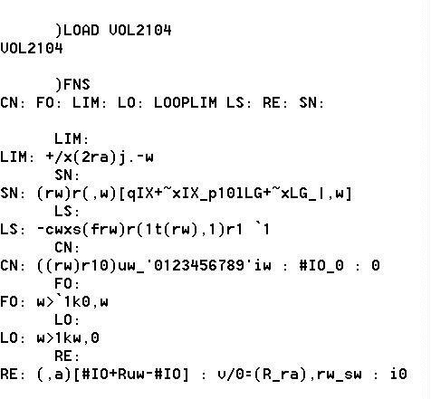
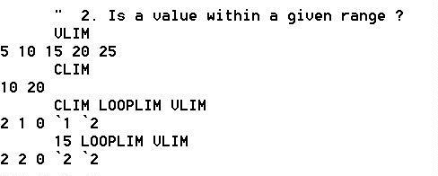
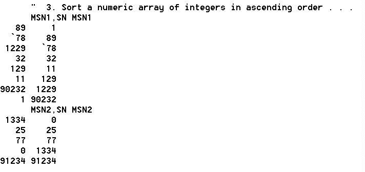
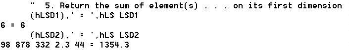
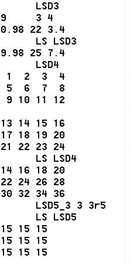
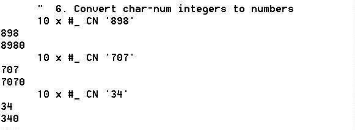
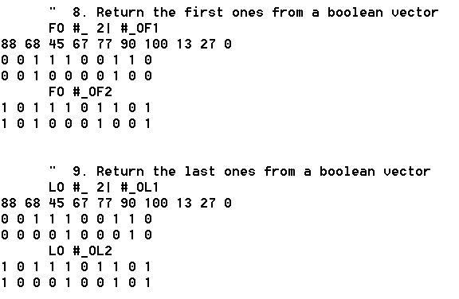
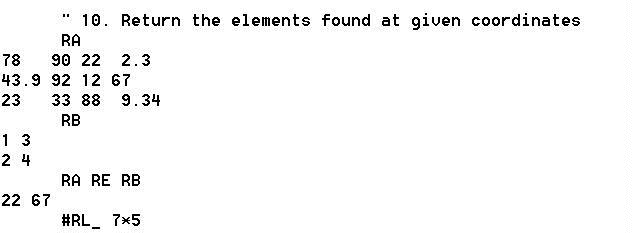
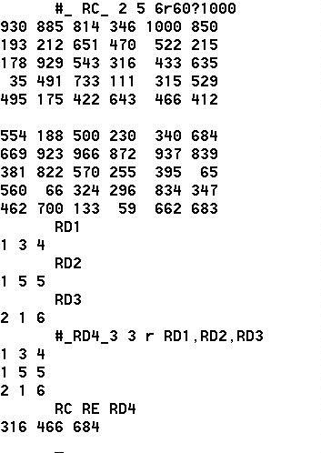

Letter: More Solutions
Vector 22:2, page 10
All solutions are written using dynamic functions in Dyalog APL, ⎕ml←3. All are origin independent.
Some notes:¶
I have two solutions to idiom #1, CE and CE1. CE1 doesn't use the rho symbol or the comma symbol.
I have two solutions to idiom #2, RA and RA1. Both require a 2-item vector on the left as the range. RA requires a scalar right argument. RA1 permits any array as the right argument and doesn’t use each. For more details on this solution, please see my article “Arithmetic Boundary Checking”in Vector Vol 21 No. 2. Solution to this particular problem is at the top of page 122.
Idiom #3:
Idiom #4:
Idiom #5: Curried left argument can be any suitable value > 0. Domain error may result if the base of the exponential function is not chosen correctly.
Idiom #6: Note – ⎕D is equivalent to '0123456789' :
Idiom #7:
Idiom #8:
Idiom #9:
Idiom #10:
More Solutions ...¶
from Gianluigi Quario (giangiquario@hotmail.com)
1. How many elements does a given variable have?
Restriction: assume that the keyboard does not have the comma (,) symbol.
2. Is a value within a given range?
Restriction: assume that the keyboard does not have any relational operators.
3. Sort a numeric array of integers in ascending order of the number of digits.
Restriction: assume that the keyboard does not have the format (⍕) or quad (⎕) symbol.
4. Return the element(s) of a numeric array indexed by its first dimension.
Restriction: assume that the keyboard does not have the shape of (⍴) symbol.
NB.(GQR) the definition of this problem is not complete:
a) should return an array with a lesser rank?
b) a scalar has not a “first dimension”, but it is required by the challenge:
or
or
5. Return the sum of element(s) of a numeric array on its first dimension.
Restriction: assume that the keyboard does not have the plus (+) symbol.
NB.(GQR) a scalar has not a “first dimension”, but it is required by the challenge:
6. Convert the string representation of integers to numbers.
Restriction: assume that the keyboard does not have the execute (⍎) symbol.
7. Return a numeric array as zeros, increasing the last dimension by 1.
Restriction: assume that the keyboard does not have the times (×), take (?), minus (-), or comma (,) symbols and it does not end with ⍴0.
8. Return the first ones from a Boolean vector.
Restriction: assume that the keyboard does not have the not (~) or rotate (²) symbols.
9. Return the last ones from a Boolean vector.
Restriction: assume that the keyboard does not have the not (~) or rotate (²) symbols.
10. Return the elements of a numeric array found at given coordinates.
Restrictions: assume that a looping solution is not allowed nor one involving semi-colon and that index origin is 1.
More Solutions ...¶
by Claude Henriod (chenriod@vtx.ch)
I present some solutions to the problems posed by Ajay Askoolum in APL Idioms, Vector 21:4, pp92-96.
The development is for a great part from my libraries originated in the 198x years on :
/APLSV IBM5110/APL68000 Wicat&Ampère/later/IBMAPL2 PS+PC/IBMwinAPL2/
All are shown as DDF valid I-APL. Tests are made in I-APL to be sure that the code is OK. But the function code is cloned in APL2 Unicode, for a better understanding.

= Requested functions APL2, valid with several interpreters.
LIM: +/×(2⍴⍺)∘.-⍵
SN: (⍴⍵)⍴(,⍵)[⍋IX+~×IX←⌈10⍟LG+~×LG←|,⍵]
LS: -⌿⍵×⍉(⌽⍴⍵)⍴(1↑(⍴⍵),1)⍴1 ˉ1
CN: ((⍴⍵)⍴10⊥⍵←'0123456789'⍳⍵ : ⎕IO←0 : 0
FO: ⍵>ˉ1↓0,⍵
LO: ⍵>1↓⍵,0
RE: (,⍺)[⎕IO+R⊥⍵-⎕IO] : ∨/0=(R←⍴⍺),⍴⍵←⍉⍵ : ⍳0
= Functions which do not match prerequisite








C. Henriod, retired IBM Advisory SE, chenriod@vtx.ch
December 7, 2005.